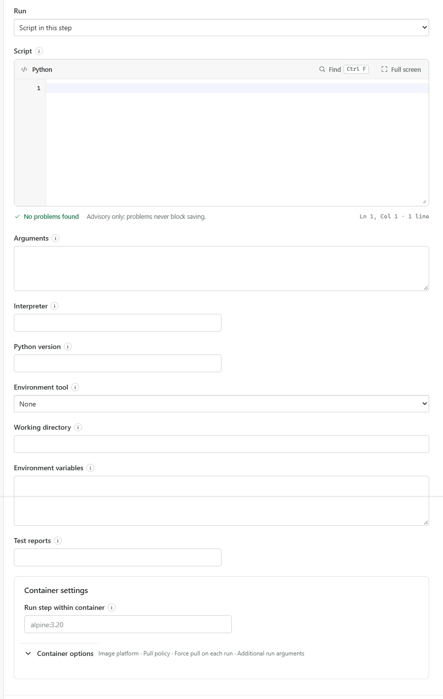

Python
Runs a Python script you type, a .py file or a module (python -m), with the interpreter on the agent.
When to use it
Use it for build helpers and tests written in Python, such as asset checks or a pytest run. It can start a virtual environment for you.
How to set it up
- Open the build configuration and click Settings › Build Steps.
- Click Add build step. Type
Pythonin Filter step types if you like, then click the Python tile (group Command line and scripts). - Type a Step name, for example
Check assets. - Fill in the fields described below.
- Optional: set Execute step, Conditions and Retry on failure. See The steps list and the step editor.
- Click Save.

Every field
| Field | What it does | Default | Example |
|---|---|---|---|
| Run | Script in this step, File or Module. | Script in this step | Module |
| Script | Python in a code editor. %name% is replaced with that build parameter. | Empty | print("ok") |
| Script file | Relative to the working directory. | Empty | tools/check_assets.py |
| Module name | Run as python -m with this dotted name. The arguments follow the module name. | Empty | pytest |
| Arguments | One argument per line. Each line stays one argument. Pass a secret through the environment. | Empty | --junitxml=reports/py.xml |
| Interpreter | Path of the interpreter. Empty takes python3 on Unix agents and python on Windows agents from the PATH. | Empty | C:\Python312\python.exe |
| Python version | The agent must report this version: 3 matches any 3.x, 3.12 matches any 3.12.x. Empty adds no requirement. Not used with an interpreter path, pipenv or poetry. | Empty | 3.12 |
| Environment tool | None runs the interpreter as it is. venv makes the folder .buildspawn-venv in the working directory if missing and runs in it. pipenv and poetry run the command through pipenv run or poetry run. None of them installs packages. In a container it must stay None. | None | venv |
| Working directory, Environment variables, Test reports, Run step within container | The same in every runner. See Fields every runner has. |
A worked example
Run the asset checker as a module and record its test report. Step name Check assets, Run = Module, Module name pytest, Arguments tools/tests and --junitxml=reports/assets.xml on separate lines, Test reports reports/assets.xml.
What you see when it runs
The console shows $ python -m pytest tools/tests --junitxml=reports/assets.xml and the pytest output. The build gets the test results, and a failed test makes the step unstable.
Problems and fixes
| Problem | What to do |
|---|---|
| The Python step has no script / file / module | Fill in the field for the mode you chose. |
| The Python module must be a dotted name | Use a name like pytest or http.server. |
| An environment tool cannot be used in a container | Set Environment tool to None. |
| The step waits for an agent | No agent reports the Python version you asked for. Lower the version or install Python on an agent. |